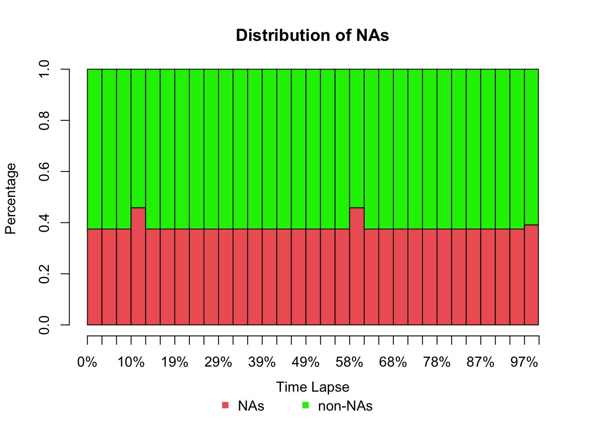
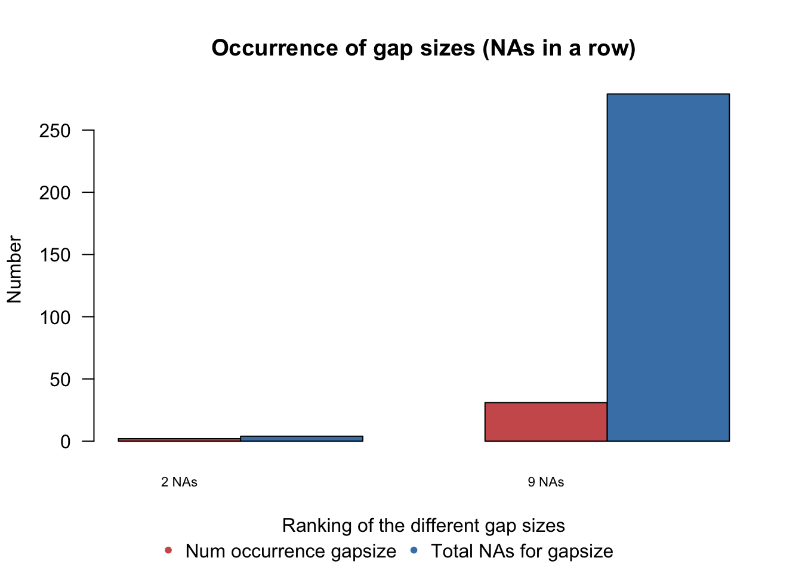
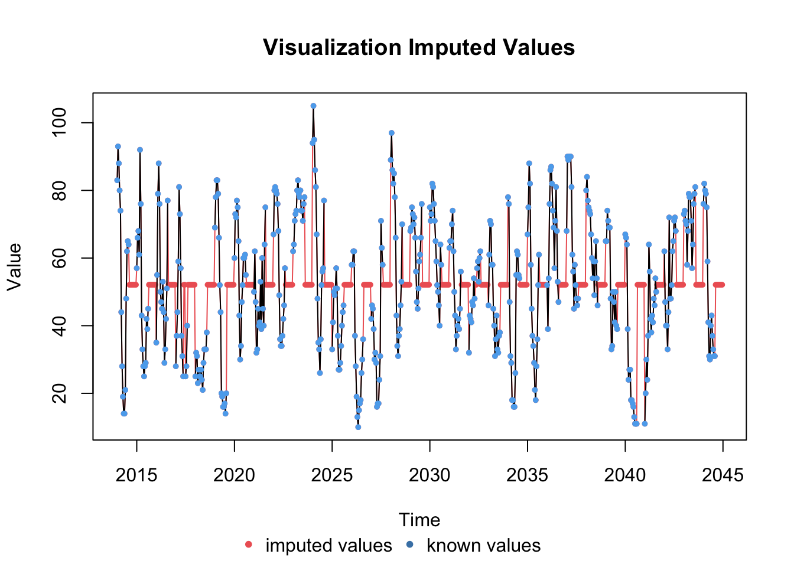
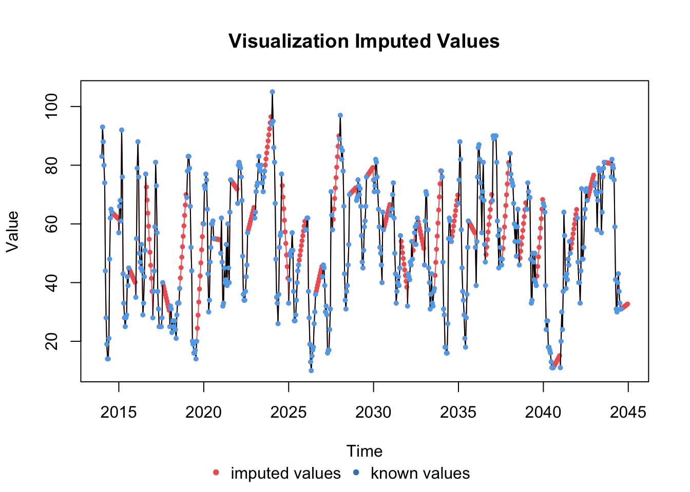
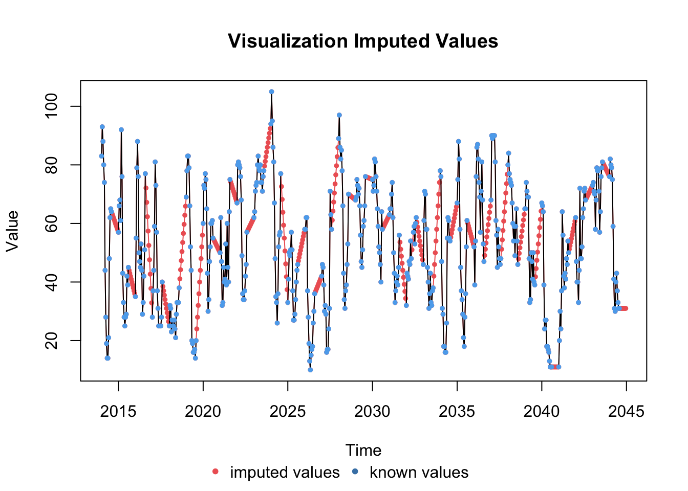

Chapter 2 Data cleaning and gathering
2.1 Data
The datasets I have used for this project are:
- Pollution in Barcelona since 1991 (source:Generalitat de Catalunya).
- Weather conditions in Barcelona city (source:Servei Metereologic de Catalunya).
- Hospitalizations due to respiratory and heart problems in Barcelona (source:Observatori del Sistema de Salut de Catalunya).
You can find all the datasets here)
2.1.1 Pollution
The “Secció d’Immissions” from Servei de Vigilància i Control de l’Aire department of Generalitat de Catalunya, gave me access to the pollution historical data.
The dataset contains all air quality measurements performed in an hourly manner for multiple pollutants, and in several stations in all Catalunya since 1991.
Given the size of the file, I have done the initial analysis of the data in Python using Jupyter notebook, in order to subset the data in smaller datasets and then perform exploratory analysis of the data with R Studio. You can check the initial analysis in the jupyter notebook “Python_initial_analysis.ipynb”.
The initial dataset is a table with 5,154,117 rows and 70 columns, as the hourly observation values for each station are written as column values. To subset the dataset in smaller ones, I have first filtered the data for stations only in the city of Barcelona, and then filtered the pollutants I’m most interested in, which are NO2 and PM10. After melting the data to have one column for each pollutant concentration value only, I have written smaller datasets which I will analyze in R.
I will not to pursue analyzing the pollutant PM2.5 as there are only observations between 2002 and 2005, and there is no hourly measurements of PM2.5 currently.
This is really unfortunate as PM2.5, the particulate matter with a diameter of less than 2.5 micrometers, are of biggest concern in other cities as they are linked to premature death from heart and lung disease. Since they are so small, they tend to stay longer in the air (they can stay in the air for days or weeks) than heavier particles, with increased chance of humans inhaling them into the bodies. And because they are so small, they can penetrate deep into the lungs and even enter the circulatory system.
PM10 are the coarse particles that are between 2.5 and 10 micrometers.These particles can also penetrate deep into the lungs and can cause multiple respiratory issues.
Nitrogen Dioxide (NO2) is one of a group of highly reactive gases known as oxides of nitrogen or nitrogen oxides (NOx). NO2 primarily gets in the air from the burning of fuel. NO2 forms from emissions from cars, trucks and buses, power plants, and off-road equipment.
Breathing air with a high concentration of NO2 can irritate airways in the human respiratory system. Such exposures over short periods can aggravate respiratory diseases, particularly asthma, leading to respiratory symptoms (such as coughing, wheezing or difficulty breathing), hospital admissions and visits to emergency rooms. Longer exposures to elevated concentrations of NO2 may contribute to the development of asthma and potentially increase susceptibility to respiratory infections. People with asthma, as well as children and the elderly are generally at greater risk for the health effects of NO2.
According to the dataset there are 11 stations in the city of Barcelona.
- St.Gervasi
- Poblenou
- Sagrera
- Sants
- Eixample
- Gracia-Sant Gervasi
- Ciutatella
- Torre Girona
- Parc Vall Hebron
- Palau Reial
- Observatori Fabra
Some of them are not currently working like St. Gervasi or Sagrera. Note that my main analysis has focused in Eixample data, as it’s one of the most polluted and centric station in the city of Barcelona.
2.1.2 Weather data
I have sourced meterological data in Barcelona from Servei Metereologic de Catalunya. The dataset includes data from 2014 to 2019 with half hourly observations from multiple measuring stations in the city. I have chosen the station in the neighborhood of Raval for my analysis, due to its proximity with Eixample station and to be able to compare the data better. The multiple variables in the dataset are related to temperature, atmospheric presure, precipitation, average humidity,and wind speed and direction.
2.1.3 Hospitalizations in Barcelona
Observatori del Sistema de Salut de Catalunya provided me an excel file with the number of daily hospitalizations due to respiratory and heart issues from 2014 to end of 2017 in the city of Barcelona. I will use this data to see how it’s relating to NO2 and PM10 pollutants and their correlation levels.
2.2 Initial data cleansing and analysis
You can find this R script here R_NO2_first_analysis.R.
I start by loading the data related to pollutant NO2 and renaming the features of the dataset. Please load the file “airNO2.csv”.
library(readr)
library(dplyr)
library(tidyr)
library(purrr)
library(lubridate)
library(ggplot2)
library(stringr)
library(knitr)
library(xts)
library(zoo)
library(gridExtra)
library(fpp2)
library(RcppRoll)
library(kableExtra)
library(imputeTS)
airNO2 <- read_csv('/Users/ione/Desktop/Project_AIR/data/airNO2.csv')Giving new column names by using dplyr:
airNO2 <- airNO2 %>% dplyr::rename(measurement_code='CODI MESURAMENT',
pollutant='CONTAMINANT',
station_code = 'CODI ESTACIÓ',
station_name = 'NOM ESTACIÓ',
latitude = 'LATITUD',
longitude = 'LONGITUD',
unit = 'UNITATS',
year = 'ANY',
month = 'MES',
day = 'DIA',
dt = 'DATA',
time = 'HORA',
value = 'VALOR')I am going to change the station names and will fix typos ( there are two different names for the same station code 44, “Barcelona (Gràcia - Sant Gervasi)”" and “Barcelona (Gracia - Sant Gervasi)”. Therefore I will create a station dictionary with more convenient station names.
station_dict <- data.frame(
station_code = c(3,4,39,42,43,44,50,54,56,57,58),
station_alias = c("St.Gervasi", "Poblenou", "Sagrera","Sants", "Eixample",
"Gracia-Sant Gervasi","Ciutatella","Torre Girona",
"Parc Vall Hebron","Palau Reial",
"Observatori Fabra")
)Next I will join the station dictionary to the airNO2 dataframe with the new station names:
airNO2 <- airNO2 %>% left_join(station_dict, by = 'station_code')Next I will convert “Time”" column in a better format concatenating minutes and seconds to have a datetime column. I will first take out a space of time column and make it hms format.
airNO2$time <- paste(airNO2$time,":00:00",sep = "")Going to include the time with the date in a new column dt using lubridate library:
airNO2$dt <- with(airNO2, ymd(airNO2$dt) + hms(time))Convert into POSIXct because Dplyer doesnt support POSIXlt
airNO2$dt <- as.POSIXct(airNO2$dt)
head(airNO2$dt)## [1] "2019-03-23 UTC" "2019-03-23 UTC" "2019-03-23 UTC" "2019-03-23 UTC"
## [5] "2019-03-23 UTC" "2019-03-23 UTC"We drop columns that we don’t need - measurement-code and station name & sort columns
airNO2_1 <- dplyr::select(airNO2, -c( "station_name", "time"))
summary(airNO2_1)## measurement_code pollutant station_code latitude
## Length:1702848 Length:1702848 Min. : 3.00 Min. :41.38
## Class :character Class :character 1st Qu.:42.00 1st Qu.:41.39
## Mode :character Mode :character Median :44.00 Median :41.39
## Mean :40.51 Mean :41.40
## 3rd Qu.:54.00 3rd Qu.:41.40
## Max. :58.00 Max. :41.43
##
## longitude unit year month
## Min. :2.115 Length:1702848 Min. : 2 Min. : 1.00
## 1st Qu.:2.133 Class :character 1st Qu.:1997 1st Qu.: 3.00
## Median :2.153 Mode :character Median :2004 Median : 6.00
## Mean :2.155 Mean :1838 Mean : 6.47
## 3rd Qu.:2.187 3rd Qu.:2011 3rd Qu.: 9.00
## Max. :2.205 Max. :2019 Max. :12.00
##
## day dt value
## Min. : 1.00 Min. :1991-01-01 01:00:00 Min. : 0.0
## 1st Qu.: 8.00 1st Qu.:1999-11-04 00:45:00 1st Qu.: 25.0
## Median :16.00 Median :2005-07-08 00:30:00 Median : 45.0
## Mean :15.71 Mean :2005-10-01 15:49:31 Mean : 49.4
## 3rd Qu.:23.00 3rd Qu.:2011-08-03 06:15:00 3rd Qu.: 68.0
## Max. :31.00 Max. :2019-03-23 00:00:00 Max. :483.0
## NA's :1036554
## station_alias
## Poblenou :239160
## Sants :221616
## Eixample :195336
## Gracia-Sant Gervasi:186552
## Parc Vall Hebron :184080
## Ciutatella :169032
## (Other) :507072Let’s do an initial analysis of the data by plotting the data by station:
St_gervasi_NO2 <- airNO2_1 %>% filter(station_code == 3)
Poblenou_NO2 <- airNO2_1 %>% filter(station_code == 4)
Sagrera_NO2 <- airNO2_1 %>% filter(station_code == 39)
Sants_NO2 <- airNO2_1 %>% filter(station_code == 42)
Eixample_NO2 <- airNO2_1 %>% filter(station_code == 43)
Gracia_NO2 <- airNO2_1 %>% filter(station_code == 44)
Ciutatella_NO2 <- airNO2_1 %>% filter(station_code == 50)
Torre_girona_NO2 <- airNO2_1 %>% filter(station_code == 54)
Vall_hebron_NO2 <- airNO2_1 %>% filter(station_code == 56)
Palau_reial_NO2 <- airNO2_1 %>% filter(station_code == 57)
Observ_fabra_NO2 <- airNO2_1 %>% filter(station_code == 58)For Poblenou station:
Poblenou_NO2_plt <- ggplot(Poblenou_NO2, aes(x = as.Date(dt), y = value)) +
geom_point(alpha = 0.5) +
geom_smooth(color = "grey", alpha = 0.2) +
geom_hline(yintercept = 200, linetype="dashed", colour = "red")+
geom_hline(yintercept = 40, linetype="dashed", colour = "red")+
scale_x_date(breaks='2 years', date_labels = "%Y") +
labs( x = "Time", y = "NO2 (µg/m3)", title = "NO2(µg/m3) evolution - Poblenou")
Poblenou_NO2_plt
We can observe that in Poblenou there is data from 1991 to 2019, but there is no data for 2013.This is common to all stations.
Also, I have included two red dotted lines, indicating EU air quality standards for NO2:
- Hourly limit for NO2 of 200 µg/m3 (18 Permitted exceedences each year).
- Average yearly limit of 40 µg/m3.
In an initial look, it seems that all data are complying with the hourly limit of 200 µg/m3 in the recent years, but there are multiple values above the 200 µg/m3 mark in the initial years. It’s positive, it seems like the pollution has improved since early 1990s. The average concentration of NO2 is right on the limit of 40 µg/m3.
I am going to plot the data for Eixample:
Eixample_NO2_plt <- ggplot(Eixample_NO2, aes(x = dt, y = value)) +
geom_point(alpha = 0.5) +
geom_hline(yintercept = 200, linetype="dashed", colour = "red")+
geom_hline(yintercept = 40, linetype="dashed", colour = "red")+
geom_smooth(color = "grey", alpha = 0.2) +
scale_x_datetime(breaks='2 years',date_labels = "%Y") +
labs( x = "Year", y = "NO2 (µg/m3)", title = "NO2(µg/m3) - NO2 evolution in Eixample station")
Eixample_NO2_plt For Eixample we have data from 1996 to 2019, but there is no data from 2009 to 2011, and for 2013. There are multiple values above the 200 µg/m3 mark between 1996 and 2012, but then the pollution peaks improve from 2014 to 2019. This is positive news. But the average curve is above the yearly average quality standard.
For Eixample we have data from 1996 to 2019, but there is no data from 2009 to 2011, and for 2013. There are multiple values above the 200 µg/m3 mark between 1996 and 2012, but then the pollution peaks improve from 2014 to 2019. This is positive news. But the average curve is above the yearly average quality standard.
Now I want to see the data more closely, so I will repeat the plot for Eixample but subsetting the data to just a week: I will define Start and end times for the subset as POSICXct objects:
startTime <- as.POSIXct("2019-03-01 10:00:00",tz="UTC")
endTime <- as.POSIXct("2019-03-8 10:00:00",tz="UTC")I will create a start and end time R object:
start.end <- c(startTime,endTime)
start.end## [1] "2019-03-01 10:00:00 UTC" "2019-03-08 10:00:00 UTC"I have to format with time zone as otherwise ggplot2 doesnt deal with original date format
date_format_tz <- function(format = "%Y-%m-%d", tz = "UTC") {
function(x) format(x, format, tz=tz)
}I am now going to plot just for Eixample:
Eixample_NO2_subset_plt <- ggplot(Eixample_NO2, aes(x = as.POSIXct(dt), y = value)) +
geom_line(alpha = 0.5) +
geom_hline(yintercept = 40, linetype="dashed", colour = "red")+
labs( x = "Time", y = "NO2 (µg/m3)", title = "NO2(µg/m3) - NO2 levels in March 2019 in Eixample")+
geom_smooth(color = "grey", alpha = 0.2) +
coord_cartesian( ylim = c(0, 150))+
scale_x_datetime(limits=start.end,breaks='24 hours',labels = date_format_tz( "%b\n%d"))
Eixample_NO2_subset_plt
This is a big finding, as I observe that there are no measurements taken between 1am and 10am systematically in any station, avoiding rush hour in the morning. This is bad news as we are not measuring the morning pollution peak due to morning rush hour.
This also means that I’ll have big number of not assigned values, difficulting a good forecasting model.
I have done similar cleansing and analysis for pollutant PM10 data. Please check the code in this R script in PM10 R_PM10_first_analysis.R.
After seeing the plots for PM10 for each and all stations, I have observed that there are two stations that are not capturing PM10 at all, which are Ciutatella and Vall Hebron, and other stations in which PM10 has been capturing on and off.
Also similarly to NO2, the PM10 data has been only measured during the day between 10am and midnight 12am, missing all values between 1am and 10am (9 observations).
2.2.1 Missing values management - package imputeTS
In order to deal with the NA values I will use the imputeTS library, which deals with missing values in univariate time series using multiple imputation algorithms like ‘Mean’, ‘LOCF’, ‘Interpolation’, ‘Moving Average’, ‘Seasonal Decomposition’, ‘Kalman Smoothing on Structural Time Series models’, ‘Kalman Smoothing on ARIMA models’. It also provides useful tools to visualize and understand the NA-s distribution.
I am going to create a TS object with assumption frequency= 24 (hourly measurements with 1 day seasonality). First I will try just a month, 20014 January, to test and see the results:
Poblenou_NO2_2014_1 <- Poblenou_NO2 %>% filter(year ==2014 & month == 1)
Poblenou_NO2_2014_ts_1 <- ts(Poblenou_NO2_2014_1[,11], start = c(2014, 1), frequency = 24)Now I will analyze the NA-s with a distribution bar plot:
plotNA.distributionBar(Poblenou_NO2_2014_ts_1, breaks = 31) Gapsize tells the distribution of the gapsizes in a time series:
plotNA.gapsize(Poblenou_NO2_2014_ts_1)
We can also see some stats about the NA-s.
statsNA(Poblenou_NO2_2014_ts_1)## [1] "Length of time series:"
## [1] 744
## [1] "-------------------------"
## [1] "Number of Missing Values:"
## [1] 283
## [1] "-------------------------"
## [1] "Percentage of Missing Values:"
## [1] "38%"
## [1] "-------------------------"
## [1] "Stats for Bins"
## [1] " Bin 1 (186 values from 1 to 186) : 68 NAs (36.6%)"
## [1] " Bin 2 (186 values from 187 to 372) : 69 NAs (37.1%)"
## [1] " Bin 3 (186 values from 373 to 558) : 74 NAs (39.8%)"
## [1] " Bin 4 (186 values from 559 to 744) : 72 NAs (38.7%)"
## [1] "-------------------------"
## [1] "Longest NA gap (series of consecutive NAs)"
## [1] "9 in a row"
## [1] "-------------------------"
## [1] "Most frequent gap size (series of consecutive NA series)"
## [1] "9 NA in a row (occuring 31 times)"
## [1] "-------------------------"
## [1] "Gap size accounting for most NAs"
## [1] "9 NA in a row (occuring 31 times, making up for overall 279 NAs)"
## [1] "-------------------------"
## [1] "Overview NA series"
## [1] " 2 NA in a row: 2 times"
## [1] " 9 NA in a row: 31 times"We observe that the NA gap that repeats more is the gap of size 9, which are the gaps related to the absence of meditions from midnight to 10am.
Not having data to test makes it difficult to choose a particular algorithm versus another, but I will try some and see how they look.
I will impute NA values by values by mean algorithm:
imp_2014_1_NO2_Poblenou_mean <- na.mean(Poblenou_NO2_2014_ts_1)Plot of data with NA-s vs data with imputations with mean values:
plotNA.imputations(x.withNA = Poblenou_NO2_2014_ts_1, x.withImputations = imp_2014_1_NO2_Poblenou_mean)
I will impute NA values by Weighted Moving Average algorithm:
imp_2014_1_NO2_Poblenou_ma <- na.ma(Poblenou_NO2_2014_ts_1)Plot of data with NA-s vs data with imputations with Weighted Moving Average values:
plotNA.imputations(x.withNA = Poblenou_NO2_2014_ts_1, x.withImputations = imp_2014_1_NO2_Poblenou_ma)
I will impute NA values by Last Observation Carried Forward algorithm:
imp_2014_1_NO2_Poblenou_locf <- na.locf(Poblenou_NO2_2014_ts_1)Plot of data with NA-s vs data with imputations by Last Observation Carried Forward algorithm:
plotNA.imputations(x.withNA = Poblenou_NO2_2014_ts_1, x.withImputations = imp_2014_1_NO2_Poblenou_locf)
I will impute NA values by kalman algorithm:
imp_2014_1_NO2_Poblenou_kalman <- na.kalman(Poblenou_NO2_2014_ts_1)Plot of data with NA-s vs data with imputations with kalman algorithm:
plotNA.imputations(x.withNA = Poblenou_NO2_2014_ts_1, x.withImputations = imp_2014_1_NO2_Poblenou_kalman) Some imputed values are negative, which is not a good outcome, so I will discard this method.
I will impute NA values by interpolation algorithm:
imp_2014_1_NO2_Poblenou_intp <- na.interpolation(Poblenou_NO2_2014_ts_1)Plot of data with NA-s vs data with imputations with interpolation algorithm:
plotNA.imputations(x.withNA = Poblenou_NO2_2014_ts_1, x.withImputations = imp_2014_1_NO2_Poblenou_intp)
I am going to choose interpolation algorithm to impute values to the data that I will use for forecasting purposes and the exploration analysis.